渋谷区千駄ヶ谷T様マンションの水回りプレミアムクリーニングを実施しました!
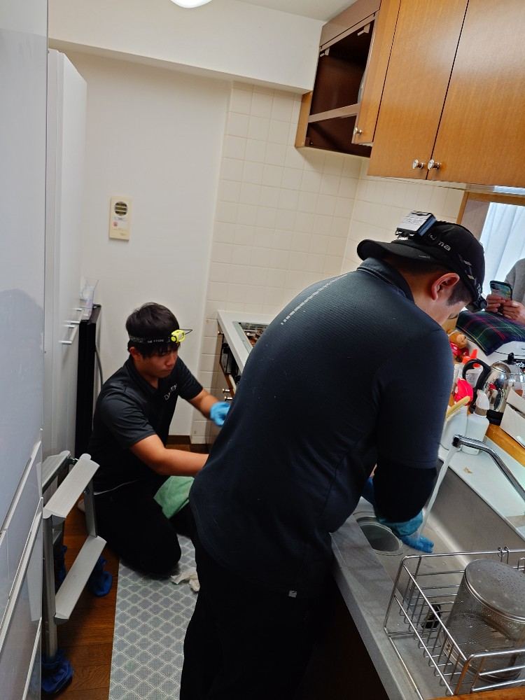
東京都渋谷区千駄ヶ谷のマンションT様ご自宅の水回りプレミアムクリーニングを実施しました。T様はこの夏にもエアコンクリーニングを実施して頂いておりますので、リピーターさん特別対応で水回りプレミアムクリーニングの料金もお得に実施させて頂きました!T様ご自宅の水回りでは、特にキッチン、キッチン換気扇の油汚れ、浴室の石鹸カス、水垢、スケール堆積汚れが有りまして、じっくり時間を掛けてオール分解のプロフェッショナルプレミアムクリーニングを実施しました。すっかり綺麗になり、T様も喜んでいらっしゃいました!ぜひ、DAIZENの水回りプレミアムクリーニングをご体験下さい!
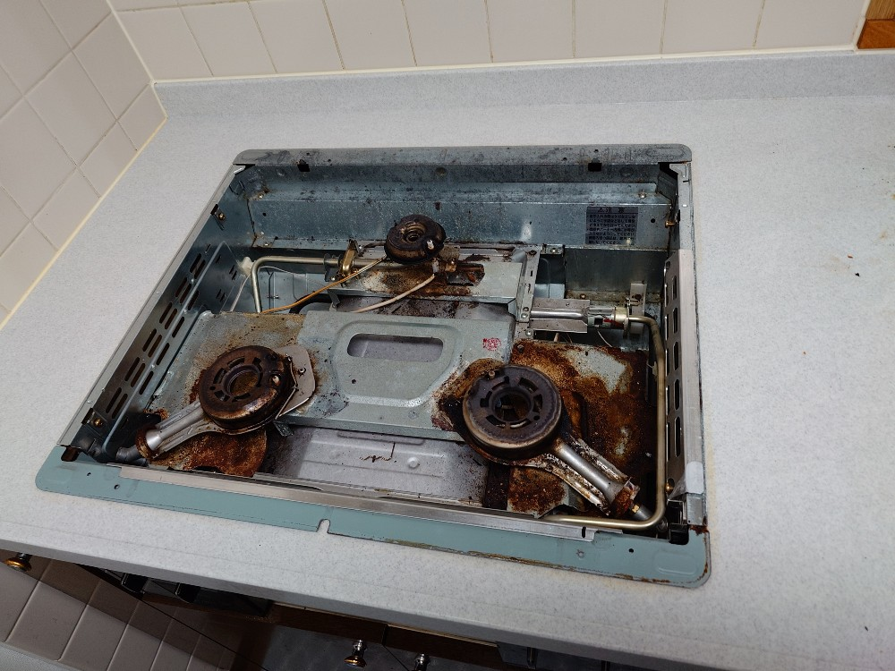
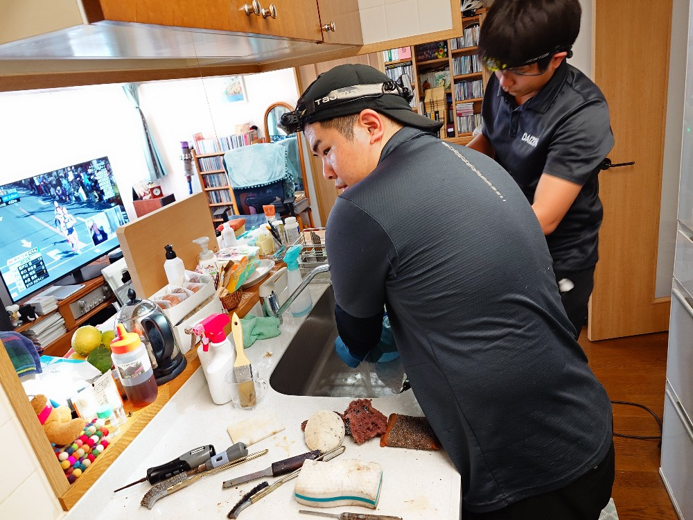
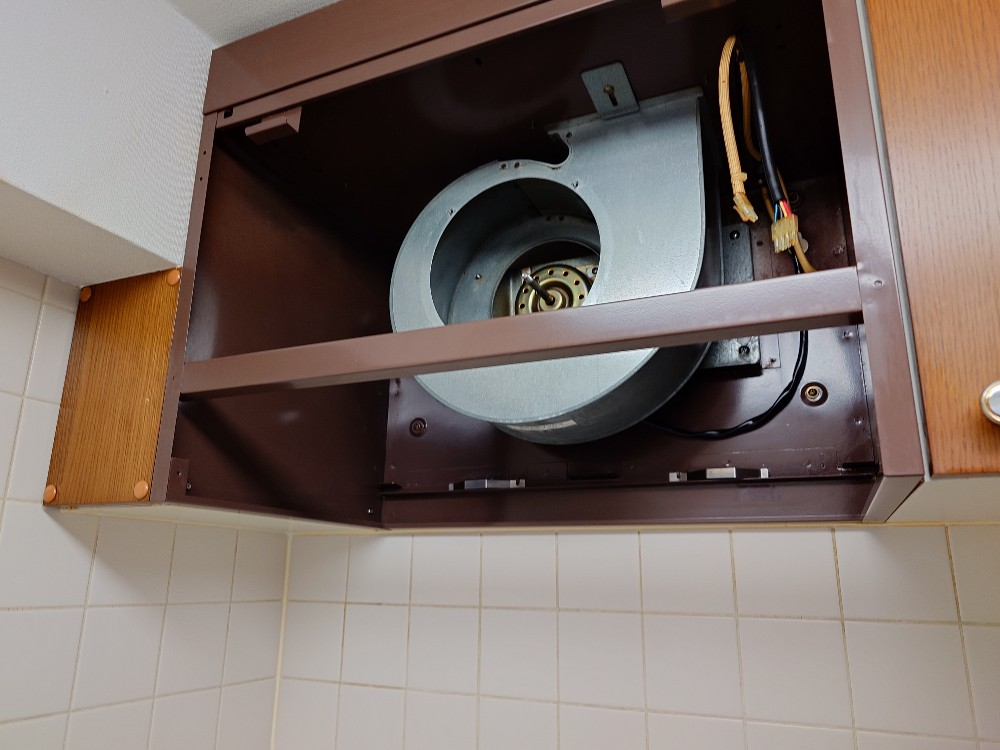
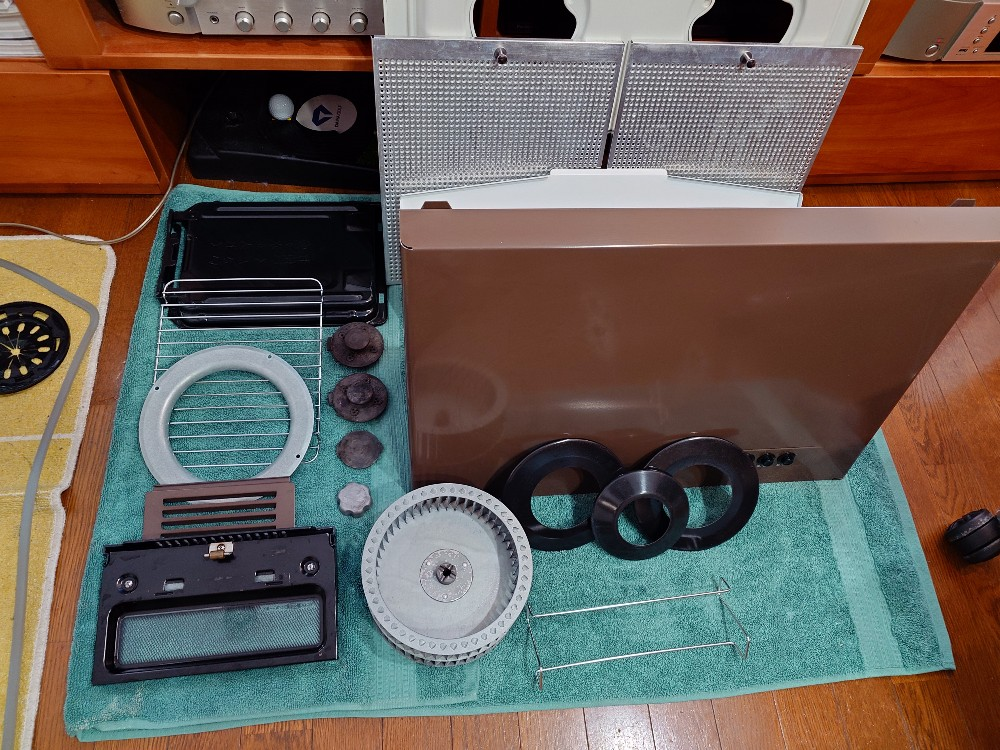
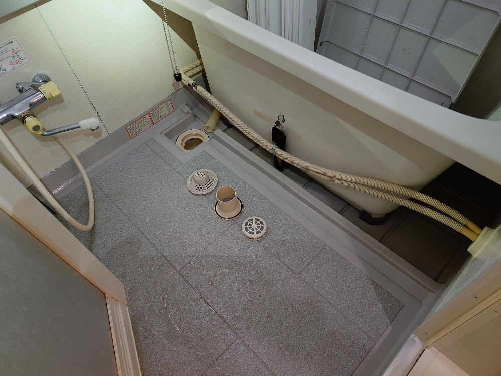
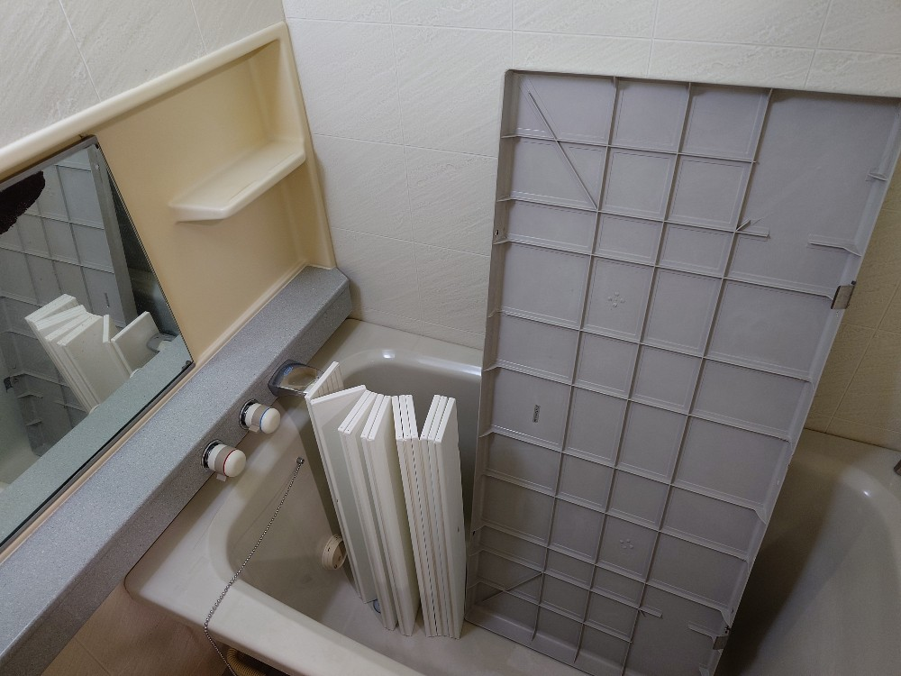
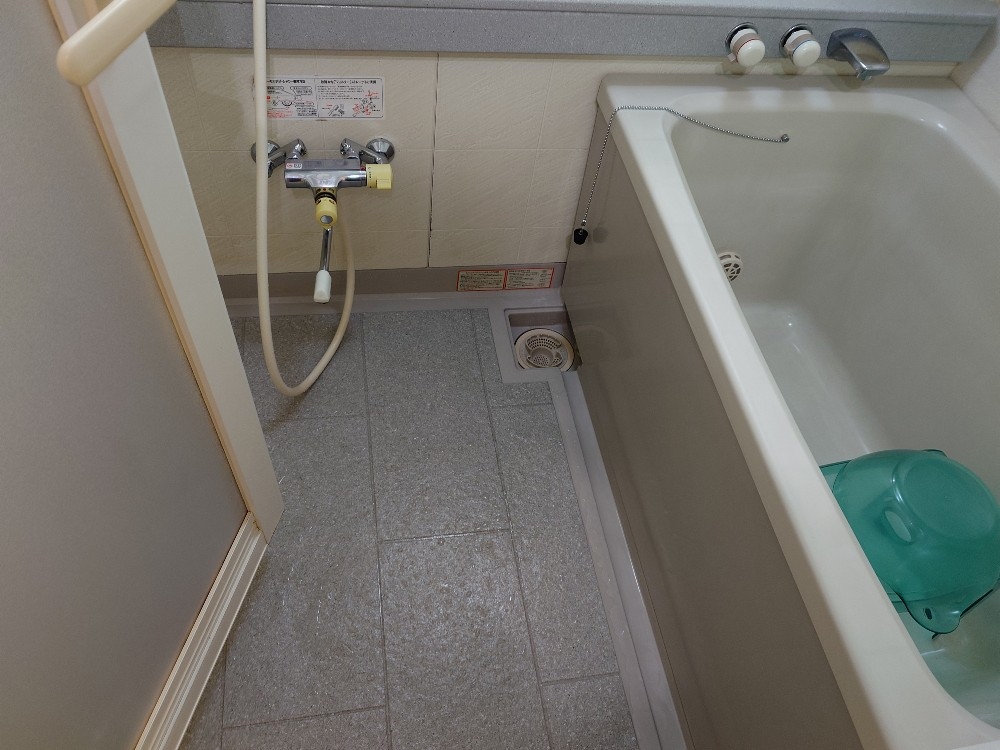
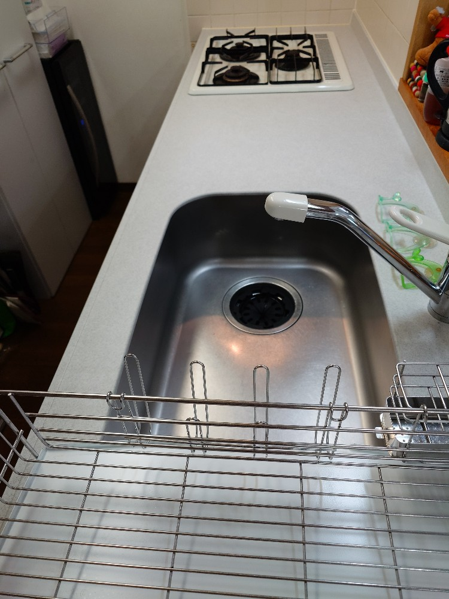
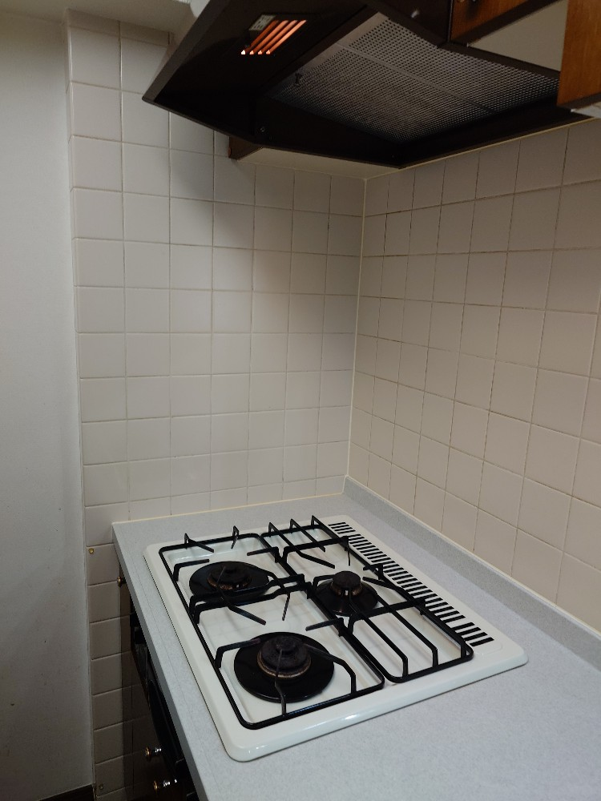
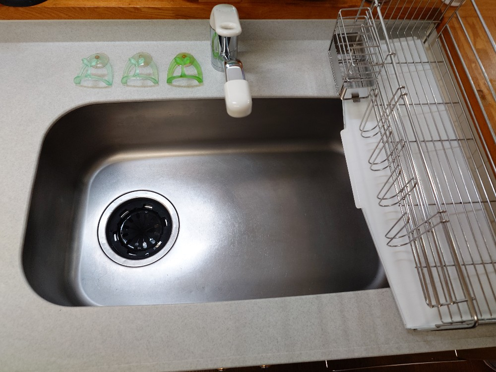